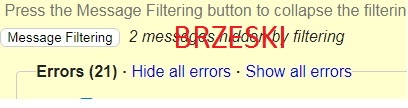

Walidator jest program komputerowy używany do sprawdzania ważności lub syntaktyczną poprawności fragmentu kodu lub dokumentu. Termin ten jest powszechnie używany w kontekście walidacji dokumentów HTML , CSS i XML, takich jak kanały RSS, chociaż może być używany dla dowolnego zdefiniowanego formatu lub języka.
liczba błędów przed
liczba błędów po
wróć